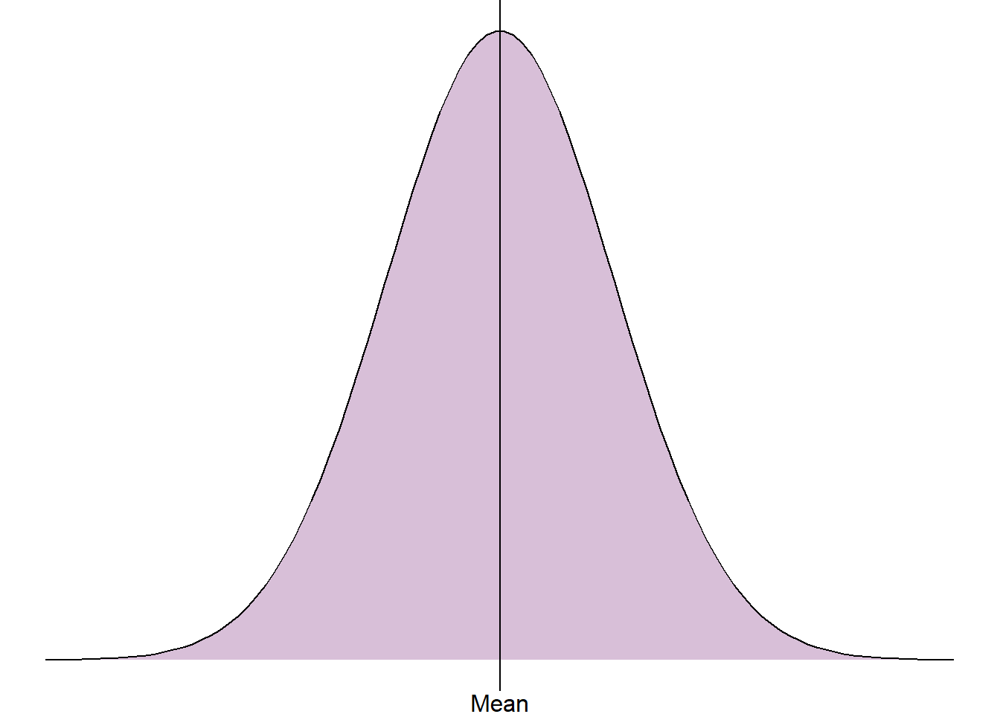
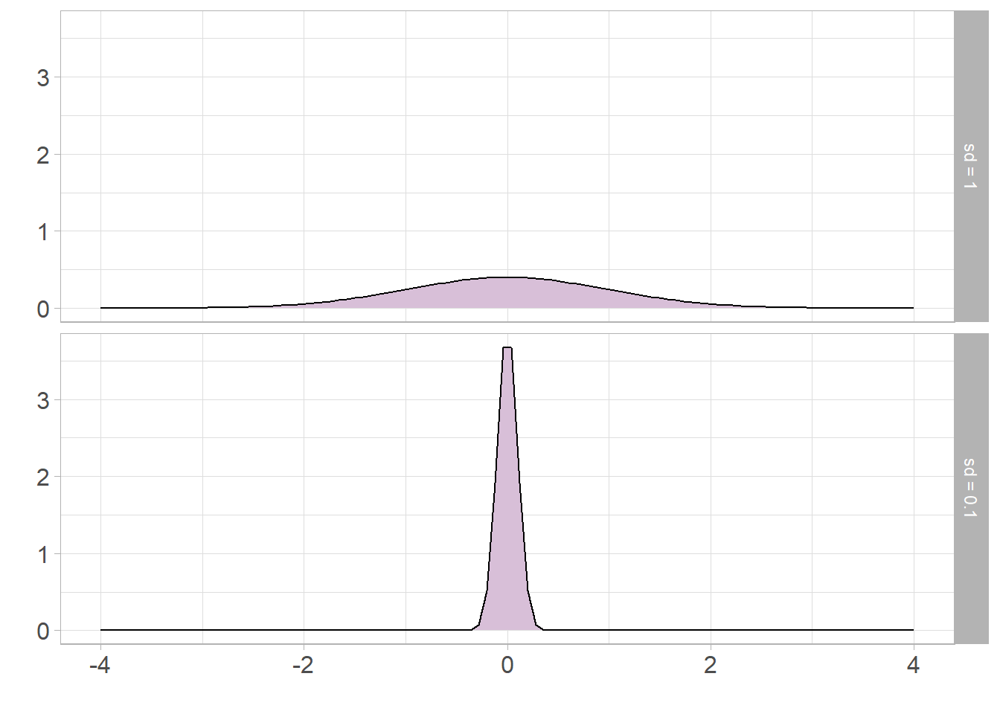
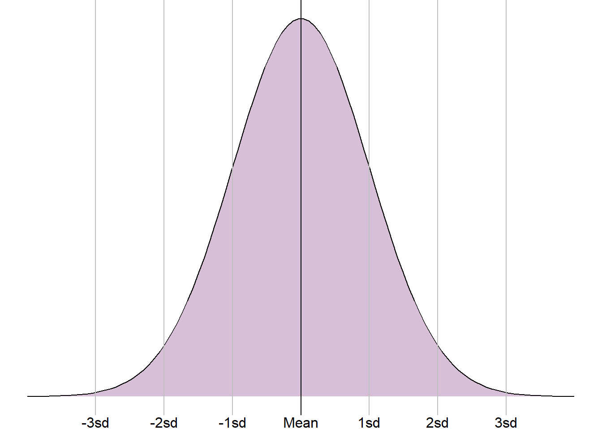

Area name | Total recorded crimes | Proportion of total crimes | Percentage of total crimes |
|---|---|---|---|
Derbyshire | 90,181 | 0.2151 | 21.51% |
Leicestershire | 103,806 | 0.2476 | 24.76% |
Lincolnshire | 57,234 | 0.1365 | 13.65% |
Northamptonshire | 62,116 | 0.1482 | 14.82% |
Nottinghamshire | 105,899 | 0.2526 | 25.26% |
3 Summarising data
Summary statistics allow us to quantify and explore different parts of a sample of data. They can be provided alongside data visualisations introduced earlier in the course to support results and interpretations.
Note
The summary statistics introduced in this section describe only the sample data so cannot be used to answer research questions fully unless all data on the target population has been collected.
The choice of summary statistics will depend on the type of variable(s) we wish to explore, the distribution of these variable(s) and the aspect of the data we would like to quantify. When interpreting summaries provided from analysis that has already been completed, it is important to check that the most appropriate summaries have been used and that interpretations of them will be valid.
3.1 Summarising categorical variables
To summarise a single categorical variable, we simply need to quantify the distribution of observations lying in each group. The simplest way to do this is to count the number of observations that lie in each group, as we have seen previously displayed in frequency tables. However, a simple count can be difficult to interpret without proper context. Often, we wish to present these counts relative to the total sample that they are taken from.
The proportion of observations in a given group is estimated as the number in the group divided by the total sample size. This gives a value between 0 and 1. Multiplying the proportion by 100 will give the percentage in each group, taking the value between 0 and 100%.
For example, the number of recorded crimes in the East Midlands in 2023, visualised in Figure 2.12 and Figure 2.17, can be presented as percentages and proportions:
Both the proportions and percentages give the same information (percentage is simply proportion multiplied by 100) but percentages are generally easier to interpret. In this example, Nottinghamshire had the highest proportion of crimes with just over a quarter (25.26%) of the total. This was closely followed by Leicestershire.
In cases where the proportion and percentage in a given group is very small, we may wish to multiply the proportions by a larger number to make values easier to interpret. These values are known as rates and are interpreted as the value per the number multiplied by. For example, if the proportion in a group was 0.0005, this could be multiplied by 10,000 to give a rate of 5 per 10,000.
3.2 Summarising numeric variables
Numeric variables are typically summarised using the centre of the variable, also known as the average, and a measure of the spread of the variable. The most appropriate choice of summary statistics will depend on the distribution of the variable. More specifically, whether the numeric variable is normally distributed or not. The shape/distribution of a variable is typically investigated by plotting data in a histogram.
3.2.1 Measures of centre
The average of a numeric variable is another way of saying the centre of its distribution. Often, people will think of the mean when trying to calculate an average, however this may not always be the case.

When data are normally distributed, the mean is the central peak of the distribution. This is calculated by adding together all numbers in the sample and dividing it by the sample size. However, when the sample is not normally distributed and the peak does not lie in the middle, extreme values or a longer tail will pull the mean towards it. This means that where data are not normally distributed, the mean will not be the centre and the value will be invalid. Where this is the case, the median should be used instead. The median is calculated by ordering the numeric values from smallest to largest and selecting the middle value.
Let’s consider the sample below of 10 students’ heights in centimeters from a high school class:
142.23, 149.58, 146.06, 160.42, 174.64, 172.54, 148.67, 143.00, 173.11, 168.72
To calculate the mean height from this sample, we add these values together, giving 1578.97cm, and divide the total by 10. Therefore, the mean height of these 10 students is 157.897cm.
The median height is calculated by ordering the heights from smallest to largest:
142.23, 143.00, 146.06, 148.67, 149.58, 160.42, 168.72, 172.54, 173.11, 174.64
We then take the middle value. As the sample size is even, the median will lie between two values - the 5th (149.58cm) and the 6th (160.42cm). To calculate the median, we add these values together and divide this by 2. The median of this sample is therefore 155cm.
When data are normally distributed, the mean and median will give the same, or very similar, values. This is because both are measuring the centre. However, when the data are skewed, the mean and median will differ. We prefer to use the mean where possible as it is the more powerful measure. This means that it uses more of the data than the median and is therefore more sensitive to changes in the sample.
3.2.2 Measures of spread
Generally the measure of the spread of a numeric variable is presented with a measure of spread, or how wide/narrow the distribution is. As with the spread, the most appropriate values will depend on whether the sample is normally distributed or not.
The most simple measure of spread is the range of a sample. The range is either presented as the smallest and largest values from a sample or the difference between these. From the sample of heights earlier, the range would either be given as [142.23cm, 174.64cm] or the difference between these values, 32.41cm.
The issue with using the range is that it is entirely defined by the most extreme values in the sample and does not give any information about the rest of it. An alternative to this would be to give the range of the middle 50%, also known as the interquartile range (IQR). The IQR is the difference between the 75th percentile, or upper quartile, and the 25th percentile, or lower quartile. As with the median, this is calculated by ordering the sample from smallest to largest. The sample is then cut into 4 and the quartiles are calculated. As with the range, the IQR can be given as the two values or the difference between them.
The lower quartile of the sample of 10 heights given earlier is the 3rd value in the ordered sample, 146.06cm, and the upper quartile is the 8th value in the ordered sample, 172.54cm. We could either present this as two values, or as the difference between them: 26.48cm. This means that 50% of the sample heights lie between 146.06cm and 172.54cm, or the width of the middle 50% of this sample is 26.48cm.
Both the range and IQR only use 2 values from the sample. As with the median, these measures discard a lot of information from the summaries. Where the sample is normally distributed, the standard deviation (SD) can be used which measures the average distance between each observation and the mean. The larger the SD, the wider and flatter the normal curve will be; the smaller the SD, the narrower and taller the curve will be:

The standard deviation is only appropriate where a numeric variable has a normal distribution, otherwise this value is meaningless. If a sample is normally distributed, then the entire sample can be completely described just using the mean and standard deviation, even when the sample values are not given. As the distribution is symmetrical, the mean and standard deviation can be used to estimate ranges of values. For example, it is known that approximately 68% of a sample will lie one standard deviation from the mean, approximately 95% within 2 standard deviations from the mean, and around 99.7% within 3 standard deviations:

This knowledge can also be used to check the mean and standard deviation were appropriate summary statistics, even if we have no other information. For example, we saw earlier a sample of settlement funding assessment (SFA) values for local authorities in England in 2015. Using a histogram, it was clear that this sample was not normally distributed. However, let’s assume that we do not have the data to plot a histogram, instead we are just given the mean, £50.85 million, and the standard deviation, £75.06 million.
If the sample SFA were normally distributed, we would expect approximately 95% of the values to lie within 2 standard deviations of the mean. That would mean 95% of the values lying between -£97.26 million and £198.97 million. The SFA for local authorities cannot be negative, therefore this range would contain a lot of impossible values. This shows that the mean and standard deviation are not appropriate summaries, and the sample is not normally distributed.